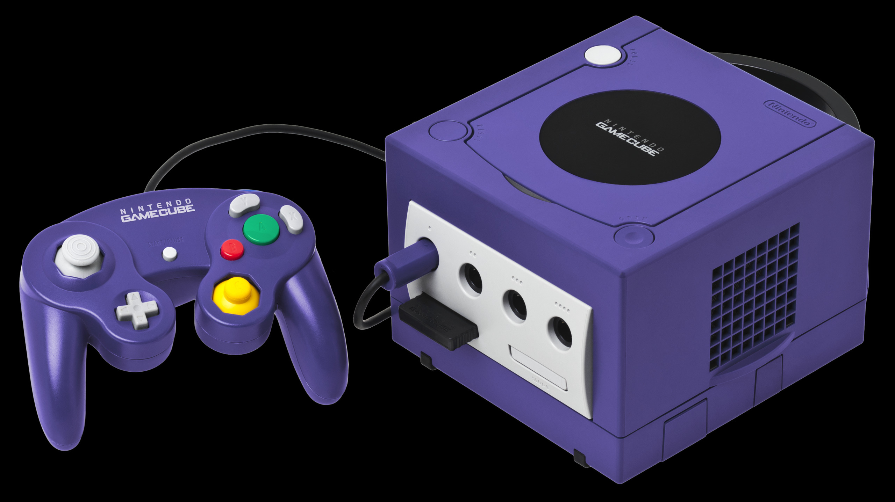
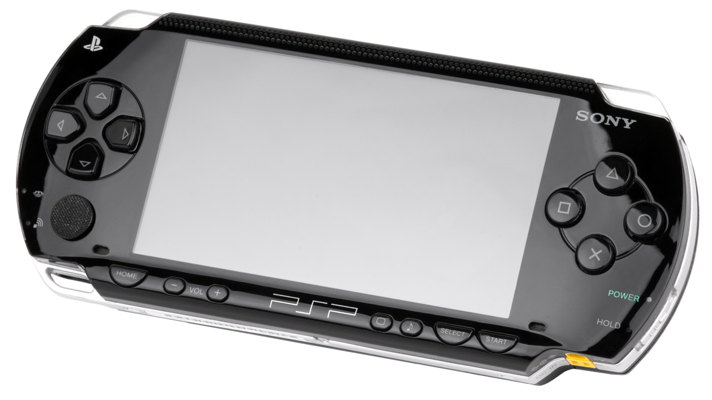
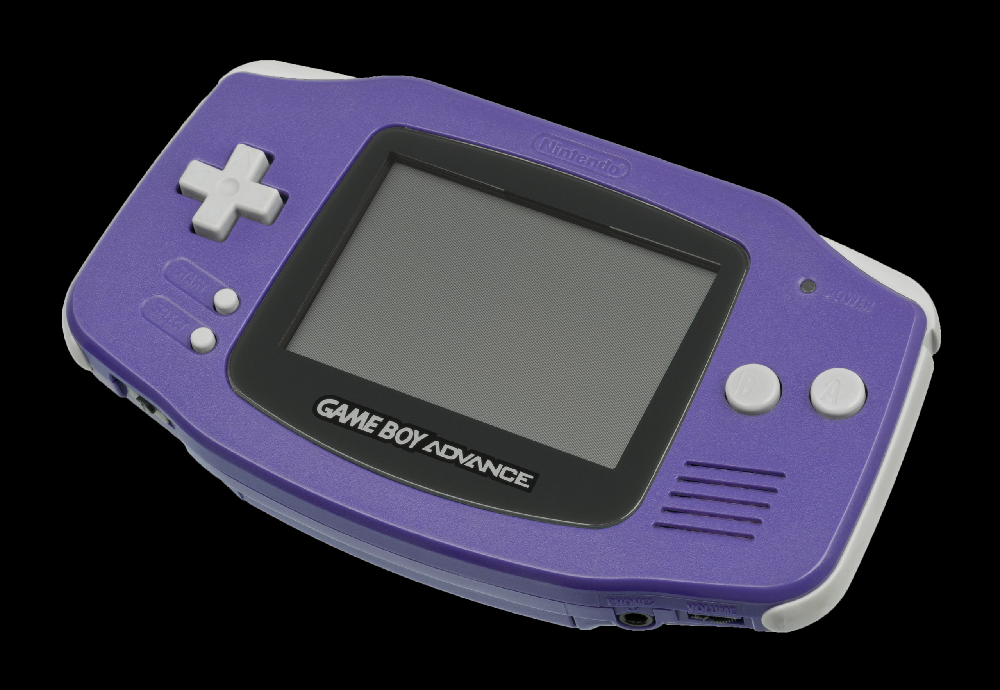
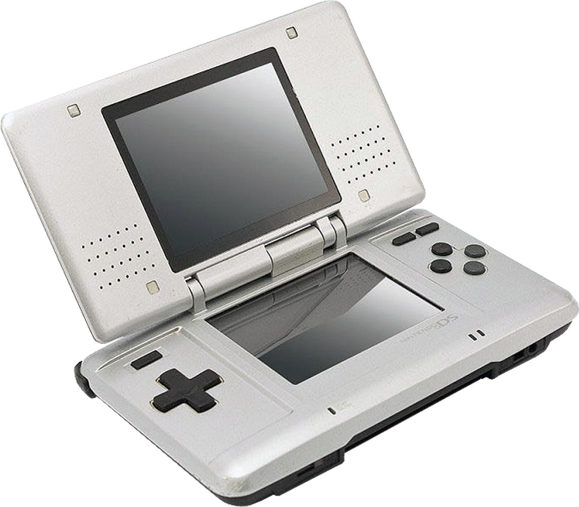

The early 2000s were a time of their own. A time before the accessibility of technology, yet also a time of advancing promise of a smart-tech future. Gone were the grounded aesthetics of the 90s, as clear landscapes, and bright colored glossy effects were in the now.
This clean, clear image was also reflected in the video gaming industry. The consoles of the 90s were solid colors, and transparent, but lacked the futuristic feeling of this era's releases.
| Console | Release Date and Type | Info |
|---|---|---|
| PlayStation 2 |
March 4, 2000 | Revolutionized consoles by being a full on entertainment system. Having the funtionality of a dvd player within. |
| Xbox |
November 15, 2001 | Fully embraced the aesthetic of dark colors with glossy textures to truly feel like an alien technology. |
| Nintendo Gamecube  |
September 14, 2001 | This console's hardware was so powerful, Nintendo used it's system as a base for their next two consoles . |
| Playstation Portable  |
December 12, 2004 | Sony's answer to Nintendo's domination of the 'handheld' console market |
| Game Boy Advance  |
March 21, 2001 | A fully fleged upgrade to the original Game Boy portable system. Now able to use updated technology to animate sprites. |
| Nintendo DS  |
November 21, 2004 | The first handheld console to have two screens on it. Introducing touch screens into the world of gaming, funnily enough only shortly before mobile phones made the same jump. |